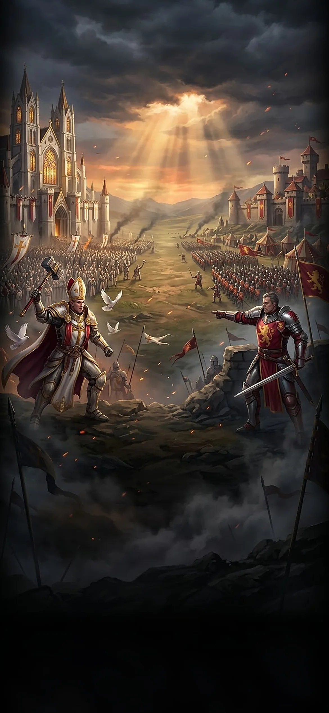
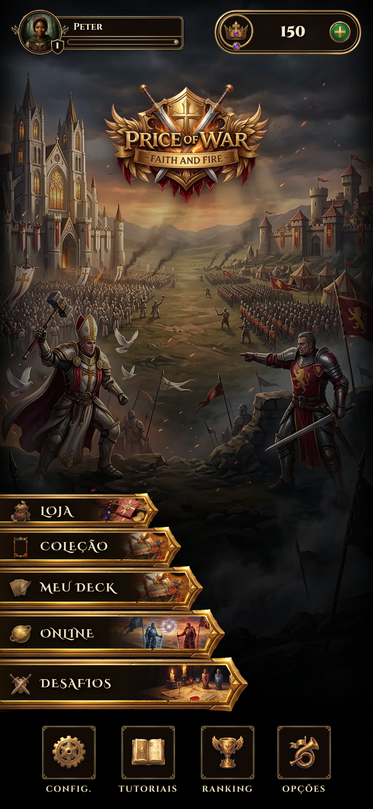

<!doctype html>
<html lang="pt-BR">
<head>
<meta charset="utf-8">
<meta name="viewport" content="width=device-width,initial-scale=1">
<title>Comunidade (mockup)</title>
<link href="https://fonts.googleapis.com/css2?family=Cinzel:wght@500;700;900&family=Cinzel+Decorative:wght@700&family=Crimson+Pro:wght@400;600&display=swap" rel="stylesheet">
<style>
  :root{--deco:'Cinzel Decorative','Cinzel',serif;--cz:'Cinzel',serif;--ser:'Crimson Pro',Georgia,serif;--k:../missoes/kit}
  html,body{margin:0;background:#050302;color:#f3e3c3}
  .phone{position:relative;width:390px;height:844px;overflow:hidden;margin:0 auto;background:#000}
  .bg{position:absolute;inset:0;width:100%;height:100%;object-fit:cover}.dim{position:absolute;inset:0;background:rgba(6,4,2,.9)}
  .win{position:absolute;left:8px;right:8px;top:62px;bottom:10px;border:34px solid transparent;border-image:url(../missoes/kit/janela.png) 95 fill/34px stretch;filter:drop-shadow(0 8px 24px #000)}
  .ribbon{position:absolute;left:50%;top:-62px;transform:translateX(-50%);width:236px;height:73px;background:url(../missoes/kit/fita-coroa.png) 100% 100%/100% 100%;display:grid;place-items:center;z-index:5}
  .ribbon span{font:900 16px var(--cz);letter-spacing:.16em;padding-left:.16em;color:#2a1a05;text-shadow:0 1px 0 rgba(255,240,180,.6)}
  .inner{position:absolute;inset:0;display:flex;flex-direction:column;padding:26px 2px 0}
  .tabs{display:flex;justify-content:center;margin:0 0 6px}
  .tab{position:relative;width:84px;height:44px;background:url(../missoes/kit/aba-inativa.png) 100% 100%/100% 100%;display:grid;place-items:center;font:700 10px var(--cz);letter-spacing:.03em;color:#a89a78;text-transform:uppercase}
  .tab.on{background-image:url(../missoes/kit/aba-ativa.png);color:#2a1a05;font-weight:900}
  .dot{position:absolute;right:-2px;top:-4px;z-index:3;min-width:17px;height:17px;border-radius:9px;background:#c93a2a;border:1.5px solid #ffd9d0;color:#fff;font:900 10px/14px var(--cz);text-align:center}
  .list{flex:1;overflow-y:auto;scrollbar-width:none;padding:0 6px 4px;display:flex;flex-direction:column;gap:4px}
  .add{display:flex;gap:6px;margin:0 8px 6px}
  .in{flex:1;height:34px;border-radius:8px;border:1px solid rgba(232,199,102,.5);background:rgba(0,0,0,.55);color:#cdbd97;font:600 13px var(--ser);padding:0 10px;display:flex;align-items:center}
  .btn{height:34px;padding:0 14px;background:url(../missoes/kit/botao-primario.png) 100% 100%/100% 100%;display:grid;place-items:center;font:900 10px var(--cz);letter-spacing:.1em;color:#2a1a05;text-transform:uppercase;white-space:nowrap}
  .btn.s{background-image:url(../missoes/kit/botao-secundario.png);color:#e8c766}
  .row{position:relative;height:60px;border:14px solid transparent;border-image:url(../missoes/kit/linha-normal-livre.png) 38 fill/14px stretch;display:flex;align-items:center;gap:8px;padding:0 4px}
  .av{position:relative;width:36px;height:36px;border-radius:50%;border:2px solid #e8c766;background:#3a2a14 center/cover;flex:none}
  .st{position:absolute;right:-2px;bottom:-2px;width:11px;height:11px;border-radius:50%;border:2px solid #1c120b;background:#4fbf6a}.st.off{background:#6b6150}.st.play{background:#e0a02a}
  .nm{font:700 13px var(--cz);color:#f3e3c3;line-height:1.1}.sub{font:600 11px var(--ser);color:#a89a78}
  .sp{flex:1;min-width:0}
  .mini{height:28px;padding:0 10px;font-size:9px}
  .sec{font:700 10px var(--cz);letter-spacing:.18em;color:#e8c766;text-transform:uppercase;margin:6px 8px 2px}
  .code{display:flex;align-items:center;gap:6px;margin:4px 8px;padding:8px 10px;border-radius:8px;border:1px dashed rgba(232,199,102,.55);background:rgba(0,0,0,.4);font:600 12px var(--ser);color:#cdbd97}.code b{font:900 15px var(--cz);letter-spacing:.2em;color:#ffe9b0}
  /* conversa */
  .chat{flex:1;overflow:hidden;padding:2px 8px;display:flex;flex-direction:column;gap:6px;justify-content:flex-end}
  .msg{max-width:78%;padding:6px 10px;border-radius:12px;font:600 13px/1.25 var(--ser);color:#f3e3c3;background:rgba(58,42,20,.9);border:1px solid rgba(232,199,102,.35)}
  .msg.me{align-self:flex-end;background:rgba(122,78,18,.92)}.msg small{display:block;font:700 9px var(--cz);letter-spacing:.1em;color:#e8c766;margin-bottom:1px}
  .sys{align-self:center;font:600 11px var(--ser);color:#a89a78}
  .compose{display:flex;gap:6px;margin:6px 8px 4px}
  .quick{display:flex;gap:5px;flex-wrap:wrap;margin:0 8px 2px}.q{font:600 11px var(--ser);padding:3px 9px;border-radius:12px;border:1px solid rgba(232,199,102,.45);color:#ecdfb0;background:rgba(0,0,0,.4)}
  .note{position:absolute;left:12px;right:12px;bottom:8px;z-index:9;font:600 11px/1.25 var(--ser);color:#ffe9b0;background:rgba(0,0,0,.75);border:1px solid rgba(232,199,102,.5);border-radius:8px;padding:6px 9px}
  /* menu */
  .bar{position:absolute;left:0;right:0;bottom:22px;display:flex;justify-content:center;gap:14px}
  .ib{position:relative;width:62px;height:62px;border:2px solid #b98a2c;border-radius:6px;background:linear-gradient(#2a1c0e,#150d06);display:grid;place-items:center;font:700 9px var(--cz);letter-spacing:.12em;color:#cdbd97;text-transform:uppercase;padding-top:26px;box-sizing:border-box}
  .ib .g{position:absolute;top:8px;left:0;right:0;text-align:center;font-size:26px;line-height:26px}
  .ib .dot{right:-6px;top:-7px}
  .rep{display:flex;align-items:center;gap:8px}.res{font:900 11px var(--cz);letter-spacing:.1em;width:38px;text-align:center}.res.w{color:#8fe0a4}.res.l{color:#ff9c8f}
</style>
</head>
<body>
<div id="app"></div>
<script>
const Q = new URLSearchParams(location.search), V = Q.get('v') || 'menu';
const av = (n) => `<div class="av" style="display:grid;place-items:center;font:900 15px var(--cz);color:#ffe9b0;background:radial-gradient(circle at 35% 30%,#7a5520,#2a1a08)">${n[0]}</div>`;
const win = (title, tabs, body, note) => `<div class="phone"><div class="dim"></div>
  <div class="win"><div class="ribbon"><span>${title}</span></div><div class="inner"><div class="tabs">${tabs}</div>${body}</div></div>${note ? `<div class="note">${note}</div>` : ''}</div>`;
const tabs = (on, d) => ['Amigos', 'Guilda', 'Decks', 'Replays'].map((t, i) => `<div class="tab ${i === on ? 'on' : ''}">${t}${d[i] ? `<span class="dot">${d[i]}</span>` : ''}</div>`).join('');
const friend = (n, s, st, acts) => `<div class="row"><div style="position:relative">${av(n)}<span class="st ${st}"></span></div><div class="sp"><div class="nm">${n}</div><div class="sub">${s}</div></div>${acts}</div>`;
let html = '';
if (V === 'menu') {
  html = `<div class="phone"><div class="bar">
    <div class="ib"><div class="g">⚙</div>Config.</div><div class="ib"><div class="g">💬</div>Comunidade<span class="dot">3</span></div><div class="ib"><div class="g">♪</div>Opções</div></div>
    <div class="note" style="bottom:100px">Novo botão no rodapé, no meio. A bolinha mostra mensagens novas e pedidos de amizade.</div></div>`;
} else if (V === 'amigos') {
  html = win('COMUNIDADE', tabs(0, [2, 0, 0, 0]), `<div class="add"><div class="in">Nome ou código do amigo…</div><div class="btn">Adicionar</div></div>
    <div class="code">Seu código: <b>K7P-29X</b><span class="sp"></span><span class="btn mini s">Copiar</span></div>
    <div class="list">
    <div class="sec">Pedidos (1)</div>${friend('Brann77', 'quer ser seu amigo', 'off', '<div class="btn mini">Aceitar</div><div class="btn mini s">✕</div>')}
    <div class="sec">Amigos (3)</div>
    ${friend('Aurelia', 'online · no menu', 'on', '<div class="btn mini s">💬 2</div><div class="btn mini">Desafiar</div>')}
    ${friend('Osric', 'jogando uma partida', 'play', '<div class="btn mini s">💬</div><div class="btn mini s">Assistir</div>')}
    ${friend('Carla123', 'visto há 3 h', 'off', '<div class="btn mini s">💬</div><div class="btn mini s">Desafiar</div>')}
    </div>`, 'Só quem é seu amigo pode te mandar mensagem ou desafio. Dá para bloquear e denunciar.');
} else if (V === 'conversa') {
  html = win('AURELIA', tabs(0, [0, 0, 0, 0]), `<div class="chat">
    <div class="sys">Hoje</div>
    <div class="msg"><small>AURELIA</small>Bora uma partida? Testei o deck novo.</div>
    <div class="msg me">Bora! Me desafia aí</div>
    <div class="msg"><small>AURELIA</small>Mandei o convite 😄</div>
    <div class="sys">Aurelia te desafiou · <b style="color:#e8c766">Aceitar</b></div></div>
    <div class="quick"><span class="q">Boa partida!</span><span class="q">Bela jogada!</span><span class="q">Revanche?</span><span class="q">Valeu!</span></div>
    <div class="compose"><div class="in">Escreva uma mensagem…</div><div class="btn">Enviar</div></div>`, 'Mensagens limitadas (200 letras, sem links), com filtro de palavrões, e sem spam. Toque numa mensagem para denunciar.');
} else if (V === 'guilda') {
  html = win('GUILDA', tabs(1, [0, 4, 0, 0]), `<div class="list">
    <div class="row" style="height:74px"><div class="av" style="width:46px;height:46px;border-radius:8px;display:grid;place-items:center;font:900 20px var(--cz);color:#ffe9b0;background:radial-gradient(circle at 35% 30%,#7a5520,#2a1a08)">LJ</div><div class="sp"><div class="nm" style="font-size:15px">Lâminas do Javali</div><div class="sub">8 membros · criada por Aurelia · código <b style="color:#ffe9b0">JAV-882</b></div></div></div>
    <div class="sec">Chat da guilda</div>
    <div class="chat" style="flex:none;height:178px;border:1px solid rgba(232,199,102,.2);border-radius:8px;background:rgba(0,0,0,.25)">
      <div class="msg"><small>OSRIC</small>Quem joga hoje à noite?</div><div class="msg me">Eu! Umas 21h</div><div class="msg"><small>BRANN77</small>Topo 👍</div></div>
    <div class="compose" style="margin:0"><div class="in">Mensagem para a guilda…</div><div class="btn">Enviar</div></div>
    <div class="sec">Membros (8)</div>
    ${friend('Aurelia · líder', 'online', 'on', '<div class="btn mini s">Desafiar</div>')}${friend('Osric', 'jogando', 'play', '<div class="btn mini s">Desafiar</div>')}
    <div style="display:flex;gap:6px;margin:6px 8px"><div class="btn s" style="flex:1">Convidar amigo</div><div class="btn s" style="flex:1">Sair da guilda</div></div></div>`,
    'Guilda sem vantagens: é só um grupo fechado com chat e lista. Até 30 pessoas. Quem não tem guilda vê "Criar" ou "Entrar com código".');
} else if (V === 'decks') {
  html = win('COMUNIDADE', tabs(2, [0, 0, 0, 0]), `<div class="list">
    <div class="sec">Compartilhar</div>
    <div class="row" style="height:72px"><div class="sp"><div class="nm">Deck Cardeal Anselmo</div><div class="sub">50 cartas · gere um código e mande para quem quiser</div></div><div class="btn mini">Gerar código</div></div>
    <div class="code"><b style="font-size:11px;letter-spacing:.04em;word-break:break-all">POW1-AQEfAgQAAQwDAgMEAAUB…</b></div>
    <div style="display:flex;gap:6px;margin:0 8px"><div class="btn" style="flex:1">Copiar</div><div class="btn s" style="flex:1">Enviar</div></div>
    <div class="sec">Importar</div>
    <div class="add"><div class="in">Cole o código de deck…</div><div class="btn">Ler</div></div>
    <div class="sub" style="margin:0 10px">Mostra o General, quantas cartas você já tem e quais faltam. Importa só as que você tem.</div></div>`, 'Este já está no jogo, dentro do editor de deck (botões Compartilhar deck / Importar deck). Aqui seria o atalho.');
} else {
  html = win('REPLAYS', tabs(3, [0, 0, 0, 0]), `<div class="list">
    <div class="sec">Minhas últimas partidas</div>
    <div class="row"><div class="res w">VIT.</div><div class="sp"><div class="nm">vs Aurelia · Ranqueada</div><div class="sub">hoje 20:41 · 9 rodadas · +18 pts</div></div><div class="btn mini">Ver</div><div class="btn mini s">Link</div></div>
    <div class="row"><div class="res l">DER.</div><div class="sp"><div class="nm">vs IA · Brann</div><div class="sub">hoje 19:02 · 7 rodadas</div></div><div class="btn mini">Ver</div><div class="btn mini s">Link</div></div>
    <div class="row"><div class="res w">VIT.</div><div class="sp"><div class="nm">vs Osric · Amistosa</div><div class="sub">ontem · 11 rodadas</div></div><div class="btn mini">Ver</div><div class="btn mini s">Link</div></div>
    <div class="sec">Dentro do replay</div>
    <div class="row" style="height:74px"><div class="sp"><div class="nm">▶ ❚❚ ⏭  1x · 2x · 4x</div><div class="sub">Passo a passo ou rápido. Mostra as duas mãos só no fim (nada de segredo durante a partida).</div></div></div></div>`,
    'Guardamos as últimas 20 partidas de cada jogador. O link abre o replay para qualquer pessoa (só leitura).');
}
document.getElementById('app').innerHTML = html;
</script>
</body>
</html>
